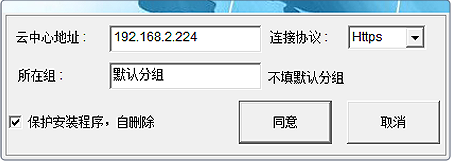
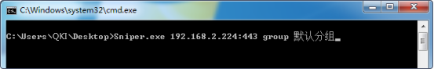

支持 XP / W7 / W8 / W10 / 2003 / 2008 / 2012
支持 Redhat|Centos 5/6/7系列
EPL数据恢复工具下载
- Windows端安装指南
- Linux安装指南
- EPL数据恢复工具下载
试用到期时间2016-12-01许可证100台当前版本4.1
Windows安装（一般安装）
1.右击选择以管理员身份运行"Sniper.exe"
2.输入正确的云中心地址，如：192.168.2.224,选择连接协议http或https，组名不输入则代表分配到“默认分组”,勾选“保护安装程序，自删除”，则安装成功后自动删除安装包，点击“同意”。
Windows安装（静默安装）
1.在CMD中，执行Sniper.exe 192.168.2.224:443 group 默认分组；
备注：静默推送的账号，必须是administrator组的用户或者是具备SYSTEM权限。
